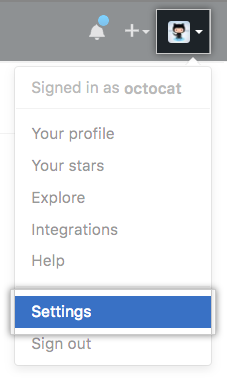
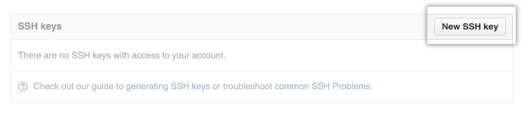
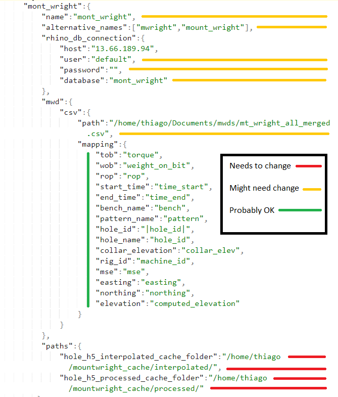

DataCloud Rhino Onboarding¶
This guide walks through all the installations and downloads needed to retrieve the dcrhino_lib from github, using Anaconda2/Spyder3 as the distribution of Python.
Linux Download Instructions¶
Step 1: Downloading Anaconda¶
- To install Anaconda(2/3), visit:
- https://www.anaconda.com/distribution/#linux,
- Download the distribution of Anaconda you want, and follow these instructions:
- https://docs.anaconda.com/anaconda/install/linux/
Warning
Make sure to enter yes when prompted “Do you wish the installer to prepend the Anaconda<2 or 3> install location to PATH in your /home/<user>/.bashrc ?” Anaconda won’t launch from command line without it.
Step 2: Downloading git¶
To install git, navigate to your new Anaconda2 folder By default, Anaconda is installed under the user profile, like so:
yourname/anaconda2launch a terminal from this folder, and download git using:conda install gitNote
This might take a second and conda may need to update as well.
Congratulations, you now have git. To download private files you will need to connect this local download to your github account.
Step 3: Adding SSH Key¶
To connect an SSH key between your computer and your github account, follow these instructions:
Once the ssh key is generated and added to the ssh agent on your machine, go to github.com and sign in. Click on your profile picture icon, then click on settings.
In the sidebar on the left, click on SSH and GPG keys then choose New SSH key or Add SSH key
Title the key (something that identifies your machine), then go to your local ssh id_rsa file commonly found in this directory:
yourname/.ssh/id_rsa.pub
- open in texteditor
- copy the contents
- go back to github
- paste the contents of the file in the second box (below)

Click Add SSH key to create the link. Now you can download all the files your github account has access to, using git.
Note
Alternatively, if you want to install/use xclip (instead of just copying & pasting):
Step 4: Downloading the Repository¶
To download the dcrhino_lib repository, open a terminal in the directory you want to place the folder. Enter each of the following on the command line:
git clone git@github.com:DatacloudIntl/dcrhino_lib.git cd dchrino_lib pip install -e .To enter branch 3.0, use the git checkout command:
git checkout 3.0Then, move out one level:
cd ..And install the log base from DataCloud:
git clone git@github.com:DatacloudIntl/rhino_lp.git cd rhino_lp pip install -e .
Step 5: Set Spyder as Default (Optional)¶
To set spyder as the default option to open .py files, right click the file, selectopen with ->andchoose a file. Then select the spyder executable file found inyourname\anaconda2\binand click the option toset this as a defaultfor opening files of this type.
Step 6: Install Clickhouse-Driver¶
Install Clickhouse-Driver to allow a connection with the database. In terminal, enter:
pip install clickhouse-driver[lz4,zstd]to download Clickhouse-Driver and the compression methods
lz4andzstdIf you have trouble (my code failed in building because my C compiler (gcc) was outdated), check out this website for instructions on a full linux build:
Clickhouse-Driver can only connect you to databases you and your computer have access to, based on your ssh key or credentials (included in the code for now).
Step 7: Edit Env_Config.json¶
The env_config.json file is the conductor of the process flow. It tells the script where to look for files, where to put files, and what the variables in each file might be named. To run the program successfully, you will need to edit this json to fit your computer. You must do the following:
Warning
Make sure you edit the files for your desired mine in the .json file. JSON viewers can be helpful by collapsing the other sections.

- Change pathnames in json to reflect the directories on your own computer
these include
hole_h5_interpolated_cache_folderandhole_h5_processed_cache_folderMake sure env_config.json is situated in the bin of
dchrino_lib
- Make sure variable names in json match variable names in csv/database
- i.e.
Collar_Elevationmight need to be changed toCollar_Elevto match the source’s variable. The picture below shows you the values you may need to edit in the .json file.
Step 8: Create an Environment¶
To keep projects and their libraries separate, create a new environment to run the test inside of. You can call it whatever you want, but make sure it uses Python 2.7 Create and enter a new environment using the following commands, changing the environment to whatever you want:
conda create -n whatever_name_you_want python=2.7
conda activate whatever_name_you_want
Step 9: Run the Test¶
Open a terminal window and change directory to
dcrhino_lib/bin. Then, enter the following to download the documented requirements to run the code:pip install -r requirements.txtWarning
This code is updated fairly often, and requirements change quickly. If your code requires anything,
pip installit in thedcrhino_lib/binfolder. Make a note to add it to therequirements.txtfile.To generate .h5 files (data to be processed and plotted), enter this command in a
dcrhino_lib/binterminal as well:python generate_cache_acorr.py mont_wrightThis (slow-ish) process generates a cache of .h5 and stores them in the directory specified in the env_config.json. [If you’re only trying to test the software, let one or two .h5 files load, then hold
Ctrl+Cin the terminal to interrupt] Check the contents of your cache to see if the .h5 files have populated.Again in
dcrhino_lib/bin, enter this command:python process_flow.py -f process_flows/v3_processing_flow.json /home/kkappler/.cache/datacloud/mont_wright/6586_5451_5451.h5For our purposes, we are trying to:
- download and install the necessary software to run and edit the code
- connect the csv/database file to the script through clickhouse-driver
- edit Env_Config.json to find the path to the data and match its variables
- succesfully run the scripts:
- generate_cache_acorr.py
- process_flow.py
To verify that the code has run succesfully, check your directory next to where the .h5 files are stored. Navigate to
holes->processed->mine_name->holde_id->v3_processing_flowThere should be a .csv, a .png (example below), the processed.h5 file, and the process_flow.json.

Step 10: Celebrate!¶
Hopefully that wasn’t too painful! Enjoy.